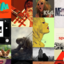

Griddlr is a service and a theme for tumblr that displays your posts or dashboard in a clean fluid grid. Developed by Norse By Norsewest, it uses CSS3 for everything you see. Keep scrolling to load more posts.
Developed in Espresso on OS X. Oswald and Questrial sourced from Google Web Fonts.